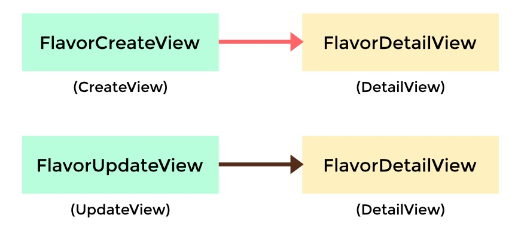

9. FBVs最佳实践
9.1 FBVs的优势
虽然FBVs不能像CBVs一样有继承。但它确实有更显著的功能优势
写FBVs的时候我们遵循以下指南：
- 越少代码越好
- 杜绝重复的代码
- Views应该处理演示逻辑。如果有必要的话，试着把业务逻辑放在models中或者forms中
- 保证views的简洁
- 用他们写自定义的403，404，500错误处理
- 使用复杂的嵌套-如果要避免阻塞的话
9.2 传递HttpRequest对象
有些时候我们想在views中重用代码，但是并没有想中间件和上下文处理器一样把它和全局功能联系起来。
在这本书的开头，我们建议创建跨项目的功能函数。
对于多数功能函数而言，我们从django.http.HttpRequest对象中拿到一个或多个属性，来收集数据或者执行操作。
通过把request对象作为首要参数，我们能在更多的方法上拥有更简单的参数。这意味着我们只需要传一个HttpRequest对象就可以了
# sprinkles/utils.py
from django.core.exceptions import PermissionDenied
def check_sprinkle_rights(request):
if request.user.can_sprinkle or request.user.is_staff:
return request
# Return a HTTP 403 back to the user
raise PermissionDenied
check_sprinkle_rights()这个函数的作用是检查用户的权限，抛出django.core.exceptions.PermissionDenied异常
你会注意到我们返回了一个HttpRequest对象，而不是返回任意的值或者返回None。我们这样做的原因是，python作为动态类型的语言，我们能给HttpRequest加上额外的属性。看下面的例子：
# sprinkles/utils.py
from django.core.exceptions import PermissionDenied
def check_sprinkles(request):
if request.user.can_sprinkle or request.user.is_staff:
# By adding this value here it means our display templates
# can be more generic. We don't need to have
{% raw %}
# {% if request.user.can_sprinkle or request.user.is_staff %}
# instead just using
# {% if request.can_sprinkle %}
{% endraw %}
request.can_sprinkle = True
return request
# Return a HTTP 403 back to the user
raise PermissionDenied
还有一个原因要简单说下。同时，我们看下views的代码
# sprinkles/views.py
from django.shortcuts import get_object_or_404
from django.shortcuts import render
from .utils import check_sprinkles
from .models import Sprinkle
def sprinkle_list(request):
"""Standard list view"""
request = check_sprinkles(request)
return render(request,
"sprinkles/sprinkle_list.html",
{"sprinkles": Sprinkle.objects.all()})
def sprinkle_detail(request, pk):
"""Standard detail view"""
request = check_sprinkles(request)
sprinkle = get_object_or_404(Sprinkle, pk=pk)
return render(request, "sprinkles/sprinkle_detail.html",
{"sprinkle": sprinkle})
def sprinkle_preview(request):
""""preview of new sprinkle, but without the
check_sprinkles function being used.
"""
sprinkle = Sprinkle.objects.all()
return render(request,
"sprinkles/sprinkle_preview.html",
{"sprinkle": sprinkle})
这个方法的另一个特点是可以集成到CBVs里：
# sprinkles/views.py
from django.views.generic import DetailView
from .utils import check_sprinkles
from .models import Sprinkle
class SprinkleDetail(DetailView):
"""Standard detail view"""
model = Sprinkle
def dispatch(self, request, *args, **kwargs):
request = check_sprinkles(request)
return super(SprinkleDetail, self).dispatch(
request, *args, **kwargs)
9.3 Decorators Are Sweet
在计算机科学的说法中，给编程语言加上语法糖的做法是为了让事情更容易理解和表达。在python中，装饰器的功能添加可以让人类阅读起来更清晰更甜美。 下面是装饰器用于FBVs的样板：
# simple decorator template
import functools
def decorator(view_func):
@functools.wraps(view_func)
def new_view_func(request, *args, **kwargs):
# You can modify the request (HttpRequest) object here.
response = view_func(request, *args, **kwargs)
# You can modify the response (HttpResponse) object here.
return response
return new_view_func
举个具体的例子：
# sprinkles/decorators.py
from functools import wraps
from . import utils
# based off the decorator template from Example 8.5
def check_sprinkles(view_func):
"""Check if a user can add sprinkles"""
@wraps(view_func)
def new_view_func(request, *args, **kwargs):
# Act on the request object with utils.can_sprinkle()
request = utils.can_sprinkle(request)
# Call the view function
response = view_func(request, *args, **kwargs)
# Return the HttpResponse object
return response
return new_view_func
上面写好了一个装饰器函数。我们把他用到view里：
# views.py
from django.shortcuts import get_object_or_404, render
from .decorators import check_sprinkles
from .models import Sprinkle
# Attach the decorator to the view
@check_sprinkles
def sprinkle_detail(request, pk):
"""Standard detail view"""
sprinkle = get_object_or_404(Sprinkle, pk=pk)
return render(request, "sprinkles/sprinkle_detail.html",
{"sprinkle": sprinkle})
装饰器的扩展阅读资料
- Decorator Explained
http://www.jeffknupp.com/blog/2013/11/29/improve-your-python-decorators-explained/ - Decorator and Functional Python
http://www.brianholdefehr.com/decorators-and-functional-python - Decorator Cheat Sheet by author Daniel Roy Greenfeld
http://www.pydanny.com/python-decorator-cheatsheet.html - 本书的附录C
9.4 传递HttpResponse对象
就像用HttpRequest对象一样，我们也可以在函数之间传递HttpResponse对象。
一个可供选择的Middleware.process_request()的方法。
10. CBVs最佳实践
Django提供了一个标准方式来写CBVs。事实上，在前面章节提到过，django的视图事实上就是一个调用， 他接受一个请求对象，返回一个响应对象。对于FBVs来说，这个调用就是视图函数；对于CBVs来说， 它提供了一个as_view()的类方法来返回这个调用。这个机制是在django.views.generic.View中实现的。 所有的CBVs都应该直接或者间接的继承这个类。
Django 也提供了一系列的通用类视图(generic class-based views, GCBVs)，它能实现在大多数web项目中实现通用的模式。
10.1 CBVs指南
- 越少代码越好
- 杜绝重复的代码
- Views应该处理演示逻辑。如果有必要的话，试着把业务逻辑放在models中或者forms中
- 保证views的简洁
- 不要用CBVs写自定义的403,404,500错误处理程序。用FBVs代替
- 更简洁的 mixins
10.2 Using Mixins With CBVs
编程中，mixin是一个类，它提供一些功能来被继承，但并不意味着它能实例化自己。 Mixins能增加类的功能和表现。
我们能使用mixins的功能来给我们的apps构建自己的view classes。那么是按照什么顺序继承的呢？ 它遵循python的方法解析顺序(method resolution order)，最简单的定义是，按照下列规则从左到右依次执行：
- django本身提供的base view classes总是在右边
- Mixins在base view的左边
- Mixins应该继承自python的内建object
from django.views.generic import TemplateView
class FreshFruitMixin(object):
def get_context_data(self, **kwargs):
context = super(FreshFruitMixin,
self).get_context_data(**kwargs)
context["has_fresh_fruit"] = True
return context
class FruityFlavorView(FreshFruitMixin, TemplateView):
template_name = "fruity_flavor.html"
在这个例子中，FruityFlavorView继承自 FreshFruitMixin和 TemplateView，
因为 TemplateView是Django提供的base view class，因此它在最右边(规则1)，
它左边是 FreshFruitMixin(规则2)。最后 FreshFruitMixin继承自object(规则3)
10.3 哪种任务用哪个GCBV?
| 名称 | 用途 | Two Scoops 的例子 |
|---|---|---|
| View | 能使用在任何地方 | 看10.6节 |
| RedirectView | 重定向到其他的URL | 将用户从’/log-in/‘页面带到’/login/‘页面 |
| TemplateView | 呈现一个HTML模板 | ‘/about/‘页面 |
| ListView | 列出一系列对象 | 各种冰淇淋口味的列表 |
| DetailView | 呈现一个对象 | 冰淇淋口味的详情 |
| FormView | 提交一个表单 | 站点的联系或者email表单 |
| CreateView | 创建一个对象 | 创建一个新的冰淇淋口味 |
| UpdateView | 更新一个对象 | 更新一个已存在的冰淇淋口味 |
| DeleteView | 删除一个对象 | 删除一个不好吃的冰淇淋口味，比如说香草牛排味 |
| Generic date views | 用于一段时间内的对象展示 | 创建一个公共的历史记录，它能显示冰淇淋口味是什么时候添加到数据库的 |
10.4 CBVs的常规tips
这一章涵盖了大多数CBV 和GCBV实现的有用的技巧。
10.4.1 通过身份认证制约用户访问CBV/GCBV
Django的CBV文档给出了一个有用的例子，使用django.contrib.auth.decorators.login_required装饰器。
https://docs.djangoproject.com/en/1.8/topics/class-based-views/intro/#decorating-class-based-views
幸运的是，django第三方app django-braces提供了一个LogubRequireMixin实现方式。
# flavors/views.py
from django.views.generic import DetailView
from braces.views import LoginRequiredMixin
from .models import Flavor
class FlavorDetailView(LoginRequiredMixin, DetailView):
model = Flavor
别忘了Mixin顺序：
- LoginRequiredMixin 一定是在最左边
- Base view class 一定实在最右边
如果打乱了顺序，将会得到不可预测的结果
10.4.2 在数据有效的表单上执行自定义操作
from django.views.generic import CreateView
from braces.views import LoginRequiredMixin
from .models import Flavor
class FlavorCreateView(LoginRequiredMixin, CreateView):
model = Flavor
fields = ('title', 'slug', 'scoops_remaining')
def form_valid(self, form):
# Do custom logic here
return super(FlavorCreateView, self).form_valid(form)
为了在已验证有效的表单数据上执行自定义的逻辑，简单的加上form_valid()逻辑就好了。form_valid()的返回值应该是个django.http.HttpResponseRedirect
10.4.3 在数据无效的表单上执行自定义操作
这个方法返回一个django.http.HttpResponse
from django.views.generic import CreateView
from braces.views import LoginRequiredMixin
from .models import Flavor
class FlavorCreateView(LoginRequiredMixin, CreateView):
model = Flavor
def form_invalid(self, form):
# Do custom logic here
return super(FlavorCreateView, self).form_invalid(form)
10.4.4 使用view对象
如果你正在使用CBVs来渲染内容，考虑下使用view对象它自己来提供访问属性和方法，
这样就可以被其他属性和方法调用。它们也可以在模板中被调用，例子：
from django.utils.functional import cached_property
from django.views.generic import UpdateView, TemplateView
from braces.views import LoginRequiredMixin
from .models import Flavor
from .tasks import update_users_who_favorited
class FavoriteMixin(object):
@cached_property
def likes_and_favorites(self):
"""Returns a dictionary of likes and favorites"""
likes = self.object.likes()
favorites = self.object.favorites()
return {
"likes": likes,
"favorites": favorites,
"favorites_count": favorites.count(),
}
class FlavorUpdateView(LoginRequiredMixin, FavoriteMixin, UpdateView):
model = Flavor
fields = ('title', 'slug', 'scoops_remaining')
def form_valid(self, form):
update_users_who_favorited(
instance=self.object,
favorites=self.likes_and_favorites['favorites']
)
return super(FlavorCreateView, self).form_valid(form)
class FlavorDetailView(LoginRequiredMixin, FavoriteMixin, TemplateView):
model = Flavor
这个flavors app模板能访问这个属性了：
{% raw %}
{# flavors/base.html #}
{% extends "base.html" %}
{% block likes_and_favorites %}
{% endraw %}
<ul>
<li>Likes: {% raw %}{{ view.likes_and_favorites.likes }}{% endraw %}</li>
<li>Favorites: {% raw %}{{ view.likes_and_favorites.favorites_count }}{% endraw %}</li>
</ul>
{% raw %}
{% endblock likes_and_favorites %}
{% endraw %}
10.5 GCBVs和表单是如何兼容的
首先我们定义一个flavor model用在这一章的view中：
# flavors/models.py
from django.core.urlresolvers import reverse
from django.db import models
STATUS = (
(0, "zero"),
(1, "one"),
)
class Flavor(models.Model):
title = models.CharField(max_length=255)
slug = models.SlugField(unique=True)
scoops_remaining = models.IntegerField(default=0, choices=STATUS)
def get_absolute_url(self):
return reverse("flavors:detail", kwargs={"slug": self.slug})
现在我们来探讨一些普遍的表单场景
10.5.1 Views + ModelForm的例子
这是最简单也是最普遍的表单场景。通常当你创建一个model时，你可能想增加一个新的记录或者
更新已存在的记录。
在这个例子中，我们会知道如何构造一系列的views，这些view可以创建、修改、展示flavor记录。
我们也会演示如何提供确认变更。下面是我们需要的views:
- FlavorCreateView 对应在一个表单中添加新口味
- FlavorUpdateView 对应在一个表单中编辑口味
- FlavorDetailView 对应用于风味创作和风味更新的确认页面

需要注意的是我们要尽可能的紧扣Django的命名约定。这三个view分别是Django中CreateView, UpdateView和DetailView的子类。
很容易就能写出这些views，因为Django给我们提供了大部分的用法：
# flavors/views.py
from django.views.generic import CreateView, UpdateView, DetailView
from braces.views import LoginRequiredMixin
from .models import Flavor
class FlavorCreateView(LoginRequiredMixin, CreateView):
model = Flavor
fields = ('title', 'slug', 'scoops_remaining')
class FlavorUpdateView(LoginRequiredMixin, UpdateView):
model = Flavor
fields = ('title', 'slug', 'scoops_remaining')
class FlavorDetailView(DetailView):
model = Flavor
但是有个问题，当我们写出这些view的urls.py和必要的模板时，会发现这个问题：
- 这个FlavorDetailView 不是一个确认页面
幸运的是，我们只需要小小的修改一下就好了。
修改的第一步是使用django.contrib.messages来告知用户只需要增加或者修改这个falvor来访问FlavorDetailView。
我们需要重写FlavorCreateView.form_valid()和FlavorUpdateView.form_valid()方法。
只需要给这两个views加上FlavorActionMixin就可以了，简直方便得不行。
# flavors/views.py
from django.contrib import messages
from django.views.generic import CreateView, UpdateView, DetailView
from braces.views import LoginRequiredMixin
from .models import Flavor
class FlavorActionMixin(object):
fields = ('title', 'slug', 'scoops_remaining')
@property
def success_msg(self):
return NotImplemented
def form_valid(self, form):
messages.info(self.request, self.success_msg)
return super(FlavorActionMixin, self).form_valid(form)
class FlavorCreateView(LoginRequiredMixin, FlavorActionMixin,
CreateView):
model = Flavor
success_msg = "Flavor created!"
class FlavorUpdateView(LoginRequiredMixin, FlavorActionMixin,
UpdateView):
model = Flavor
success_msg = "Flavor updated!"
class FlavorDetailView(DetailView):
model = Flavor
在本章之前，我们举了一个简单的例子，如何在GCBV中覆写form_valid()。
这里，我们通过给多个views创建一个mixin继承的方式来复用form_valid()。
现在我们使用django的消息框架来给用户展示确认消息。FlavorActionMixin的作用是根据用户动作的执行来排列一个确认消息，
flavor被添加或修改后，一个消息列表被传递到了FlavorDetailView的上下文。
我们给view的模板加上下面的代码，再创建或者修改flavor就能看到这些消息：
{% raw %}
{# templates/flavors/flavor_detail.html #}
{% if messages %}
{% endraw %}
<ul class="messages">
{% raw %}
{% for message in messages %}
{% endraw %}
<li id="{% raw %}message_{{ forloop.counter }}{% endraw %}"
{% raw %}
{% if message.tags %} class="{{ message.tags }}"
{% endif %}>
{{ message }}
{% endraw %}
</li>
{% raw %}
{% endfor %}
{% endraw %}
</ul>
{% raw %}
{% endif %}
{% endraw %}
回顾下，这个例子再次演示了如何覆写form_valid方法，合并到mixin中，
如何合并多个mixins到一个view，并且给出了非常有用的django.contrib.messages框架的快速介绍
10.5.2 Views + Form的例子
对于ModelForm有时候你更想使用Form，搜索表单是一个特别好的使用案例，你可能还会碰上其他的真实场景。
在这个例子中，我们将会创建一个简单的flavor搜索表单。它不会改变任何flavor数据。
只会查询ORM，然后在搜索结果页面把数据展示出来。
有很多复杂的方法可以实现，但是对于我们这个简单的例子，只需要加上一个view就足够。
我们把FlavorListView用作搜索页面和搜索结果页面。
这种场景下，我们会把q用作查询参数，倾向于使用GET请求，因为我们不涉及到添加，修改，删除对象的操作，因此不必使用POST请求。
为了返回匹配的搜索结果，我们需要修改标准查询集(queryset)。我们在flavor/view.py中添加下面代码：
from django.views.generic import ListView
from .models import Flavor
class FlavorListView(ListView):
model = Flavor
def get_queryset(self):
# Fetch the queryset from the parent get_queryset
queryset = super(FlavorListView, self).get_queryset()
# Get the q GET parameter
q = self.request.GET.get("q")
if q:
# Return a filtered queryset
return queryset.filter(title__icontains=q)
# Return the base queryset
return queryset
搜索表单应该看起来和下面差不多：
{% raw %}
{# templates/flavors/_flavor_search.html #}
{% comment %}
Usage: {% include "flavors/_flavor_search.html" %}
{% endcomment %}
{% endraw %}
<form action="{% raw %}{% url "flavor_list" %}{% endraw %}" method="GET">
<input type="text" name="q" />
<button type="submit">search</button>
</form>
10.6 只使用django.views.generic.View
只在项目中使用django.views.generic.View也是完全可能的。它没有我们想象得那么极端。
如果用FBVs来写的话，需要多个if嵌套HTTP方法，if request.method == ...。
但是按照下面的方式来写的话，开发者理解起来毫无困难：
from django.shortcuts import get_object_or_404
from django.shortcuts import render, redirect
from django.views.generic import View
from braces.views import LoginRequiredMixin
from .forms import FlavorForm
from .models import Flavor
class FlavorView(LoginRequiredMixin, View):
def get(self, request, *args, **kwargs):
# Handles display of the Flavor object
flavor = get_object_or_404(Flavor, slug=kwargs['slug'])
return render(request,
"flavors/flavor_detail.html",
{"flavor": flavor}
)
def post(self, request, *args, **kwargs):
# Handles updates of the Flavor object
flavor = get_object_or_404(Flavor, slug=kwargs['slug'])
form = FlavorForm(request.POST)
if form.is_valid():
form.save()
return redirect("flavors:detail", flavor.slug)
我们发现在项目中使用django.views.generic.View类，用GET方法来展现JSON,PDF或者其他非HTML内容是非常有用的。
我们用来在FBVs中渲染CSV, Excel, PDF文件的技巧在CBVs中也可以实现。
from django.http import HttpResponse
from django.shortcuts import get_object_or_404
from django.views.generic import View
from braces.views import LoginRequiredMixin
from .models import Flavor
from .reports import make_flavor_pdf
class PDFFlavorView(LoginRequiredMixin, View):
def get(self, request, *args, **kwargs):
# Get the flavor
flavor = get_object_or_404(Flavor, slug=kwargs['slug'])
# create the response
response = HttpResponse(content_type='application/pdf')
# generate the PDF stream and attach to the response
response = make_flavor_pdf(response, flavor)
return response
这个例子相当直接，但是如果我们需要更多的mixins，处理更多的自定义逻辑的话，相比其他厚重的views，django.views.generic的简洁性能帮助我们更容易的处理。
10.7 更多资源
- https://docs.djangoproject.com/en/1.8/topics/class-based-views/
- https://docs.djangoproject.com/en/1.8/topics/class-based-views/generic-display/
- https://docs.djangoproject.com/en/1.8/topics/class-based-views/generic-editing/
- https://docs.djangoproject.com/en/1.8/topics/class-based-views/mixins/
- https://docs.djangoproject.com/en/1.8/ref/class-based-views/
- http://ccbv.co.uk/
- http://www.pydanny.com/tag/class-based-views.html
其他有用的CBV库
- django-extra-views
- django-vanilla-views